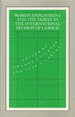

<body bgcolor="#FFFFFF" text="#000000" link="#0000FF" vlink="#CC0000" alink="#CC0000"><center><hr width="350" size="1" align="center" noshade>Investigates the interrelations between women's waged work and household roles<hr width="350" size="1" align="center" noshade><p><a href="https://cdcshoppingcart.uchicago.edu/Cart/ChicagoBook.aspx?ISBN=9780877227397&&PRESS=temple" target="_top">Buy this book!</a> | <a href="https://cdcshoppingcart.uchicago.edu/Cart/Cart.aspx?PRESS=temple" target="_top">View Cart</a> | <a href="https://cdcshoppingcart.uchicago.edu/Cart/Cart.aspx?PRESS=temple" target="_top">Check Out</a></p><p></p></center><!--none//--><h1>Women, Employment and Family in the International Division of Labour</h1>
<h3>edited by Sharon Stichter and Jane L. Parpart</h3>
<P>cloth 0-87722-739-X $47.50, May 90, <FONT COLOR=#990033>Out of Print</FONT>
<BR> 288 pp
</P><p>In the present stage of international capitalist development, women are increasingly being drawn into paid employment by multinational and state investment in the Third World. This volume investigates the interrelations between women’s participation in the urban wage economy and their productive and reproductive roles in the household and family. It brings together a selection of important recent research on all major regions of the developing world by leading scholars in this emerging field. It argues that the household itself is an important determinant of the character and timing of women’s labour force participation, and it assesses the extent to which family patterns can be expected to change as women increasingly work outside the home.
<BR>&nbsp;<H2>About the Author(s)</H2>
<P><b>Sharon Stichter</b> is Professor of Sociology at the University of Massachusetts, Boston.</P>
<P><b>Jane L. Parpart</b> is Associate Professor of History, Dalhousie University, Halifax, N.S. They are also the editors of <I>Patriarchy and Class: African Women in the Home and the Workforce</I>.</P>
<P>Contributors: Helen I. Safa, Janet W. Salaff, Jean L. Pyle, Marnia Lazreg, Alison M. Scott, Constantina Safilios-Rothschild, Ursula Sharma, and the editors.</P>
<BR><H2>Subject Categories</H2>
<p><A HREF="/tempress/women.html" TARGET="_top">Women's Studies</a>
<BR><A HREF="/tempress/labor.html" TARGET="_top">Labor Studies and Work</a>
<BR><A HREF="/tempress/family.html" TARGET="_top">Family Policy</a>
</p>
<p align="center"><a href="https://cdcshoppingcart.uchicago.edu/Cart/ChicagoBook.aspx?ISBN=9780877227397&&PRESS=temple" target="_top">Buy this book!</a> | <a href="https://cdcshoppingcart.uchicago.edu/Cart/Cart.aspx?PRESS=temple" target="_top">View Cart</a> | <a href="https://cdcshoppingcart.uchicago.edu/Cart/Cart.aspx?PRESS=temple" target="_top">Check Out</a></p><p><font face="Arial" size="1"><a href="copyright.html" onMouseOver="window.status='Web Copyright Policy';return true;" onMouseOut="window.status=''" title="Web Copyright Policy">&copy;</a> 2015 <a href="http://www.temple.edu" target="new" onMouseOver="window.status='Link to Temple University home page';return true;" onMouseOut="window.status=''" title="Link to Temple University home page">Temple University</a>. All Rights Reserved. http://www.temple.edu/tempress/titles/788_reg.html</font></p>